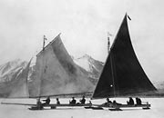
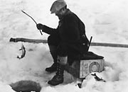
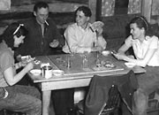
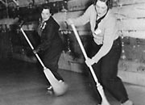
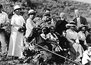

Les Yukonnais ont toujours fait preuve d’ingéniosité et de créativité pour se divertir. Les Premières nations du Yukon écrivent des chansons soulignant des événements spéciaux, battent le tambour, récitent des contes et des blagues, et donnent des cadeaux. La danse a toujours été une partie vivante et importante des cérémonies, comme les potlatchs.
Le mouvement de masse durant la première partie du XXe siècle, de nouvelles coutumes et des célébrations du monde entier ont été introduites au Yukon. On a trouvé de nouvelles façons de profiter de la vie. Les Autochtones et les non-Autochtones pratiquaient des sports d’équipe comme le hockey et le baseball. Le curling et le tennis étaient populaires. À l’intérieur, on jouait aux cartes, on dansait, ont faisait des charades et on organisait des fêtes formelles.
On patinait, on dansait et pratiquait la raquette. On allait en pique-nique et on organisait des randonnées pour prendre des photos. On nageait, pratiquait le jeu de bâtonnets et jouait au golf. On participait à des excursions en bateau à aubes pour voir le soleil de minuit. Certaines activités traditionnelles comme les courses de traîneaux à chiens et la pêche sont devenus des sports ou des loisirs.
On continue à se rencontrer et à célébrer pour souligner les événements importants et moins importants. Les Yukonnais s’amusent dans le cadre de nombreuses activités spéciales : festivals de musique, célébrations du solstice, Noël, carnavals d’hiver, célébration de la fonte des glaces, le retour des cygnes et le Jour de la Découverte.
«Ils se rencontraient dans les montagnes, en forêt. Mon père disait qu’ils chantaient et dansaient au rythme de la chanson.»
Tillie Smith, (Dene) Gedeni : Traditional Lifestyles of Kaska Women
Passer au tableau La dignité d’un districtBien du plaisir
(Ci-dessus) Tennis dans les rues de Dawson (vers 1900).
AY, collection Chishlom nº 5625
Voiliers sur patins de J. Williams à Carcross (vers 1915). Williams faisait partie d’une brigade d’entretien de la White Pass.
AY, collection Scott/Phelps, 89/31 nº 161
Pêche sur la glace (années 1930).
AY, collection Tidd nº 7298
La conductrice d'attelage de chiens Babe Southwick, à la ligne de départ de la course à Whitehorse, en 1965.
AY, Whitehorse Star (1er mars 1965)
Article du Whitehorse Star, rendant homage à Babe Southwick, morte soudainement après s'être classée troisième à la course d'attelage de chiens en 1965. Son dossard, portant le numéro 8, a été retiré.
AY, Whitehorse Star (1er mars 1965)
Pearl Kazinsky, Carl Miller, Clarence Bleiler et Nora Hare jouant aux cartes, Elsa (années 50).
AY, collection Hare nº 6867
Edith Rito accompagnée d’une autre femme jouant au curling (vers 1940).
AY, collection Harbottle nº 6159
Chorale en pique-nique à Fort Reliance (1916).
AY, collection Church Missionary Society, 88/35 nº 43